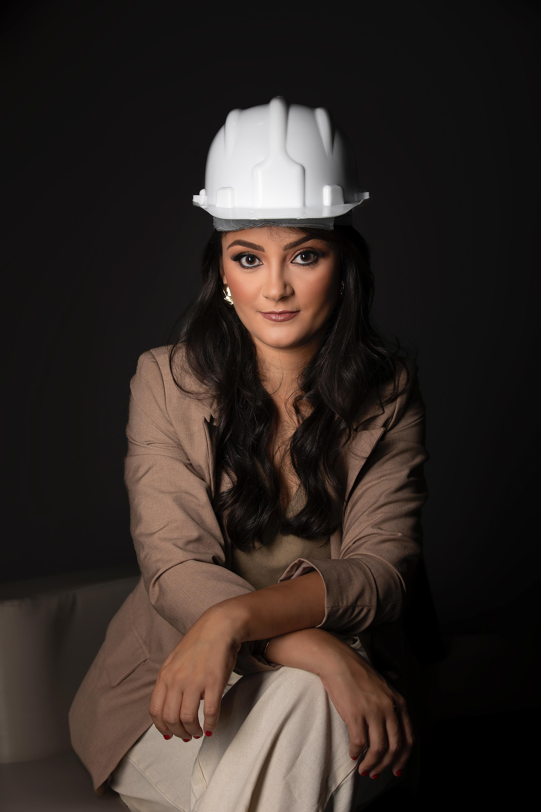
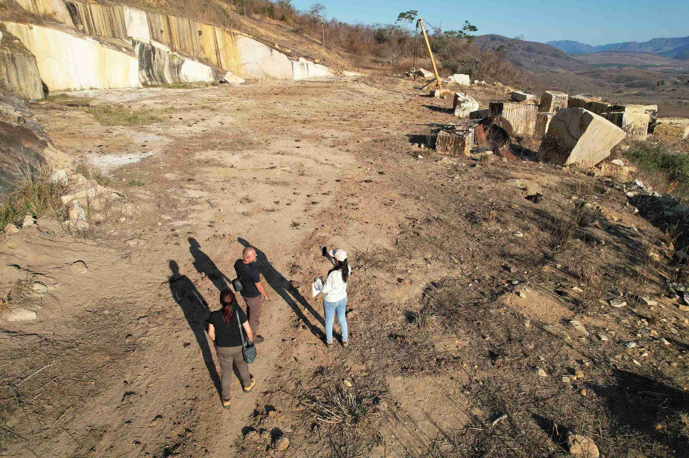
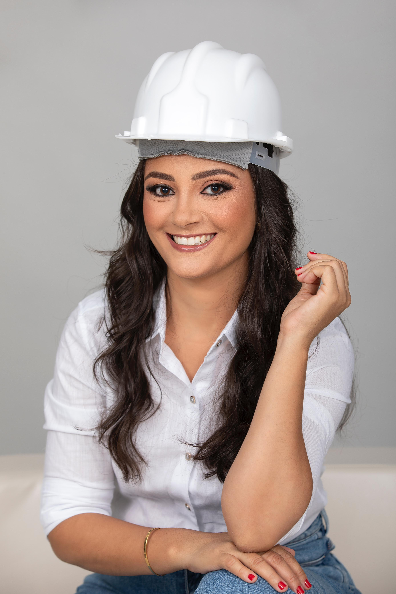
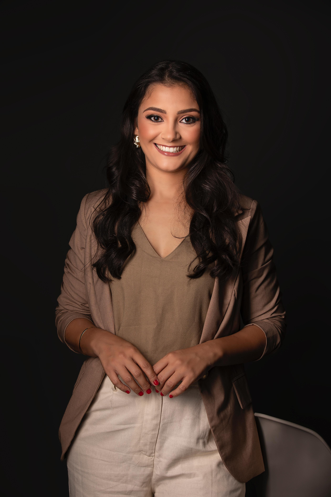

Operar sem licença, ou com a licença vencida, coloca anos de investimento sob risco de embargo, paralisação e multas que chegam à casa dos milhões. A Foco Green conduz cada etapa, do campo ao protocolo, até a sua licença sair.

Na mineração, a parte ambiental é o que decide se a operação continua de pé. E o problema raramente avisa antes de virar processo.
Muitos empreendimentos minerários operam sem o licenciamento exigido, às vezes sem dimensionar o tamanho da irregularidade que isso representa.
Um prazo perdido ou uma condicionante não cumprida é o suficiente para abrir um processo administrativo contra o empreendimento.
Um embargo pode durar 12 meses ou mais: exatamente o tempo necessário para regularizar um empreendimento. Esse é tempo de máquina parada e receita interrompida.
Em atividade minerária, as autuações podem alcançar a casa dos milhões, somadas a passivos ambientais que travam financiamento, licenciamento futuro e a venda do ativo.
A Foco Green assume a regularização ambiental do seu empreendimento do início ao fim. Do diagnóstico à licença emitida, você conta com acompanhamento técnico em todas as etapas e suporte mesmo após a aprovação.
O Diagnóstico Ambiental Gratuito é uma análise inicial da situação do seu empreendimento: o que já está regular, o que está em risco e o que precisa ser resolvido primeiro. Sem juridiquês e sem compromisso.
Mande uma mensagem agora e conte, em poucas palavras, a situação da sua mineradora. A partir daí, a Foco Green assume a parte técnica.
Falar com a Foco GreenA maioria entrega um documento e some. Aqui, a Foco Green caminha com você do campo até depois da licença emitida.

Visita técnica e leitura real do empreendimento, no local, onde os riscos e as oportunidades de fato aparecem.
Análise documental, enquadramento legal e definição da estratégia de regularização mais segura e rápida para o seu caso.
Elaboração técnica e protocolo junto aos órgãos ambientais competentes, com acompanhamento de cada exigência.
Da abertura do processo à emissão da licença, cuidamos de tudo para você. E, depois dela, continuamos na gestão ambiental para manter sua regularidade.


Engenheira Ambiental à frente da Foco Green Soluções Ambientais, com atuação em todo o ciclo da mineração, da análise de viabilidade ao licenciamento, gestão ambiental e mineral ao fechamento da mina. Atendimento técnico, ético e direto, do jeito que o empresário do setor precisa.
Equipe técnica multidisciplinar com engenheiro de minas, engenheiro florestal, biólogo e engenheiro ambiental. Cada frente da sua regularização nas mãos de quem é especialista nela.
O nosso foco é no resultado do cliente: a sua mina operando com a parte ambiental resolvida e protegida.
Atendimento profissional, serviços rápidos e de acordo com as exigências e normas ambientais. Recomendo. Fui muito bem atendido e, sempre que preciso, o atendimento é excelente.
Nunca fui tão bem assessorado como estou sendo na Foco. Trabalho sério e competência: é isso que encontrei na Foco Green.
Cada dia sem regularização é um dia a mais de risco de embargo e autuação. Comece pelo Diagnóstico Ambiental Gratuito e descubra exatamente o que precisa ser feito, na ordem certa.
Solicitar Diagnóstico Gratuito agoraAtendimento direto com a equipe técnica · Minas Gerais
Sim. Atendemos empreendimentos que já estão em operação sem licença ambiental. O primeiro passo é realizar um diagnóstico para entender o cenário atual, avaliar os riscos e estruturar um plano de regularização seguro e estratégico para o seu negócio.
Sim. Embora nossa especialidade seja a legislação e os processos ambientais de Minas Gerais, também atendemos empreendimentos em outros estados, avaliando cada caso de acordo com a legislação e os órgãos ambientais competentes.
É. A análise inicial da situação do seu empreendimento é feita sem custo e sem compromisso. Você sai dela sabendo o que está regular, o que está em risco e o que precisa ser resolvido primeiro.
Cada empreendimento possui particularidades que impactam o prazo de regularização. Nossa equipe realiza um diagnóstico inicial para definir a estratégia mais adequada e conduzir o processo com a máxima agilidade possível.
Atendemos empreendimentos que precisam de regularização e gestão ambiental, com foco em mineração, extração de areia, argila, rochas ornamentais, cascalho, minério de ferro e demais atividades sujeitas ao licenciamento ambiental.